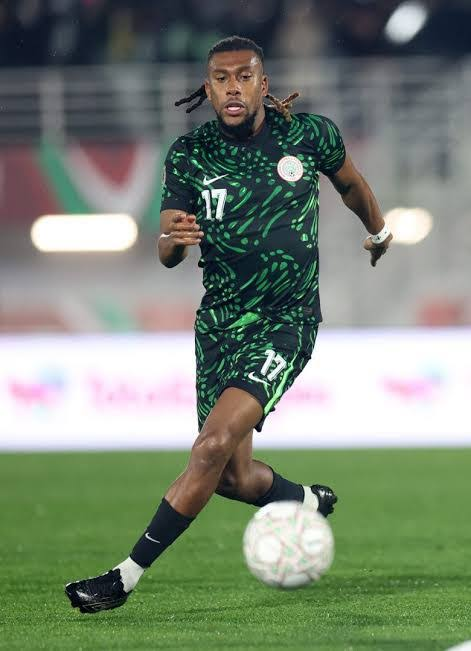

 Why the Super Eagles Midfield Is the Key to Everything 9 Oct 2026 | 4 min read Games are won and lost in the middle. Here is what needs to change.
Match report: Super Eagles Beat 10-Man Mozambique 3-2 to End Friendly Drought. 7 Oct 2026 | 3 min read Nigeria beat Mozambique 3-2 in a friendly in Portimão, Portugal. They trailed after seven minutes, then goals from Terem Moffi, Frank Onyeka and Moses Simon put them 3-1 up. Mozambique were down to ten men after a first-half red card, and they pulled one back in the second half.
Match report:Finally! Super Eagles Win a Friendly After 15 Tries 7 Oct 2026 | 3 min read It was not smooth, but it was a win. The Eagles fell behind early, fought back, and ended a run of 15 friendlies without a victory. Mozambique made it nervy late on, and the goalkeeper’s mistake on their second goal is something fans will keep talking about.
Transfer News: Why it matters for the Super Eagles 5 Oct 2026 | 3 min read Super Eagles striker Taiwo Awoniyi has moved from Nottingham Forest. Read more
SUPER EAGLES ID ID: SP-SE-001 A strong, hard-running striker who likes to battle defenders and hold the ball up. He creates space with his movement and works hard without the ball. Read more Back to top